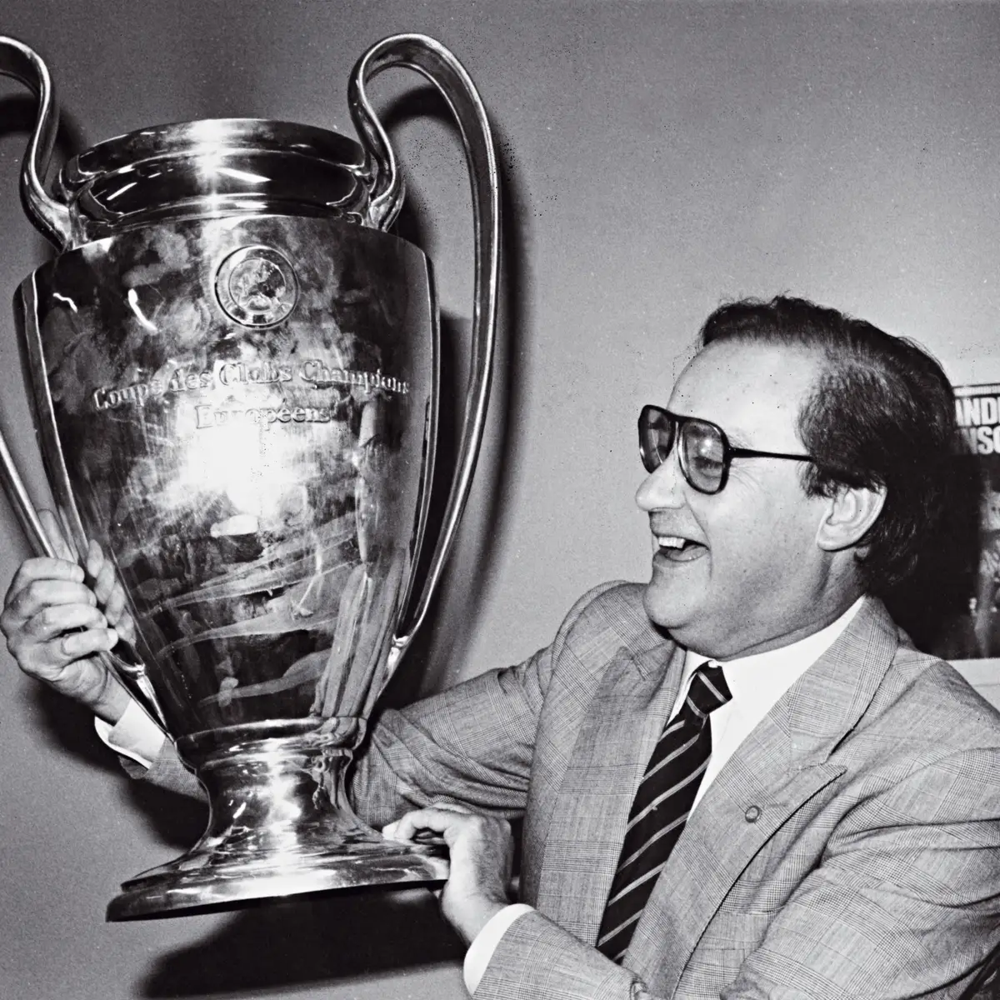
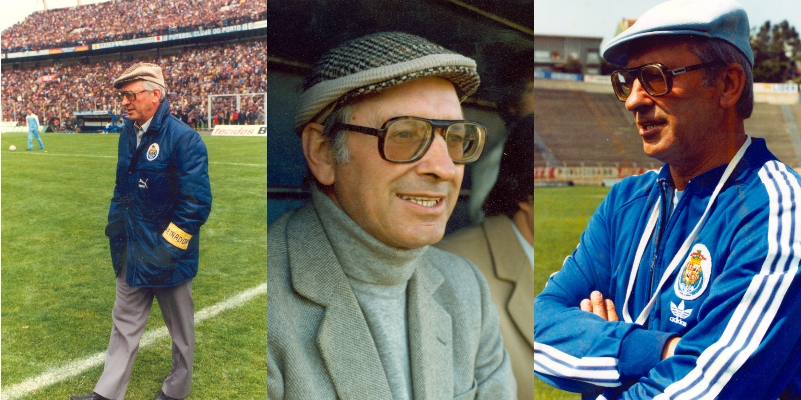
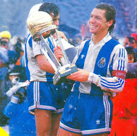
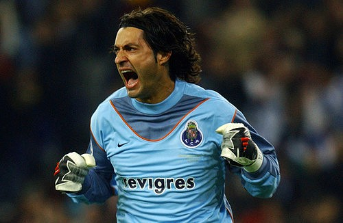

<<<<<<< HEAD
Document
=======
Maiores Ídolos
>>>>>>> master
Maiores Idolos do Fc Porto
<<<<<<< HEAD
=======
>>>>>>> master
1-Jorge Nuno Pinto da Costa (Presidente)

O Presidente dos Presidentes
- Nascimento: 28 de dezembro de 1937, Porto, Portugal
- Presidente desde 1982 (o mais titulado do mundo).
- Transformou o FC Porto num clube europeu.
- Com ele: 2 Champions, 2 Intercontinentais, 2 Ligas Europa, 20+ campeonatos nacionais.
- Considerado o maior símbolo vivo do clube.
2. José Maria Pedroto (Treinador)

O Mestre
- Nascimento: 19 de janeiro de 1928, Alijo, Portugal
- Revolucionou o clube na década de 1970.
- Responsável pelo renascimento do FC Porto.
- Mentor de uma nova mentalidade vencedora.
- Apelidado de “O Mestre”.
3. Fernando Gomes (“Bibota”)
<<<<<<< HEAD

Melhor marcador português da sua geração.
=======
Bibota
>>>>>>> master
- Nascimento: 22 de novembro de 1956, Porto, Portugal
<<<<<<< HEAD
=======
Duas vezes Bola de Prata europeia.
Melhor marcador português da sua geração.
Ídolo absoluto na década de 1980.
4. João Pinto (o “Capitão”)
 O Capitão
O Capitão
- 16 épocas no FC Porto.
- Lateral-direito histórico.
- Símbolo de garra, entrega, disciplina e liderança.
- Para muitos, o maior capitão da história do clube.
5. Vítor Baía

- Nascimento: 15 de outubro de 1969, Vila Nova de Gaia, Portugal
- Um dos melhores guarda-redes portugueses de sempre.
- Multicampeão: Champions (2004), UEFA (2003), Taça Intercontinental (1987).
- Jogador com mais títulos da história do futebol mundial por vários anos.
>>>>>>> master